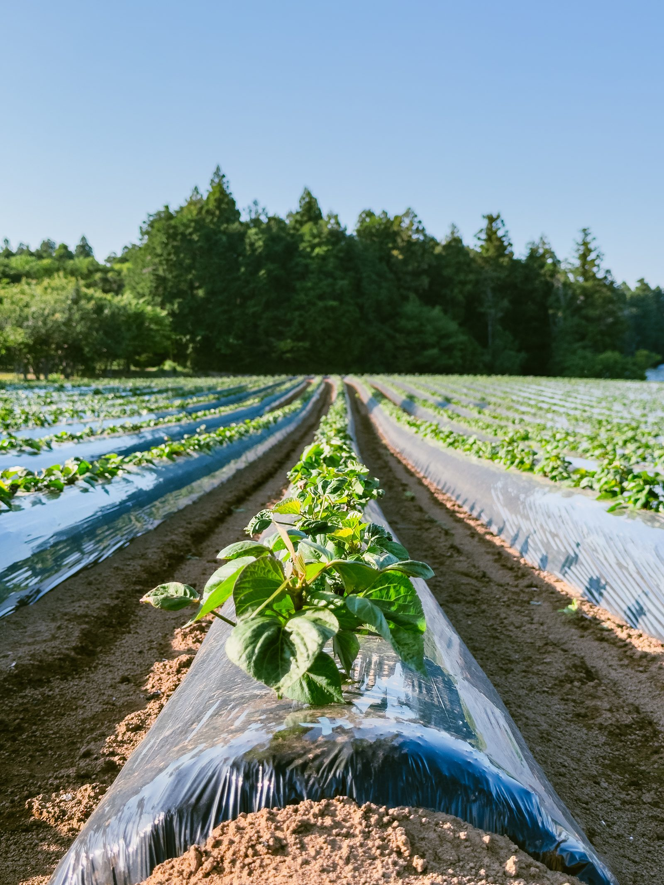
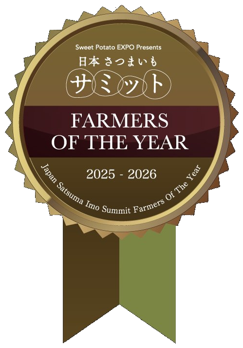
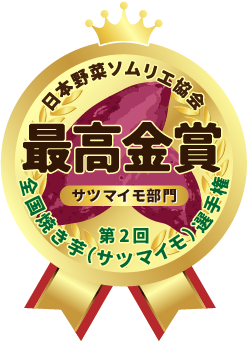
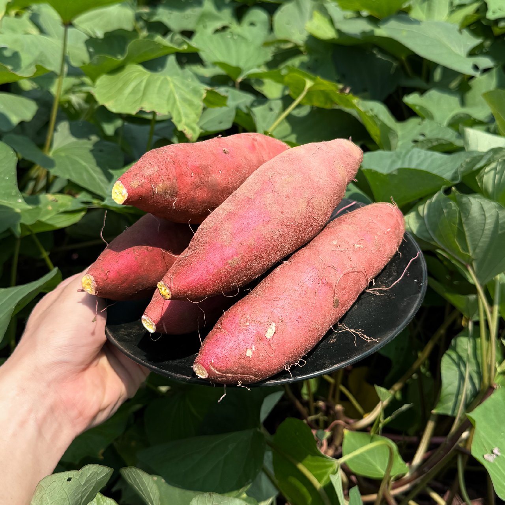
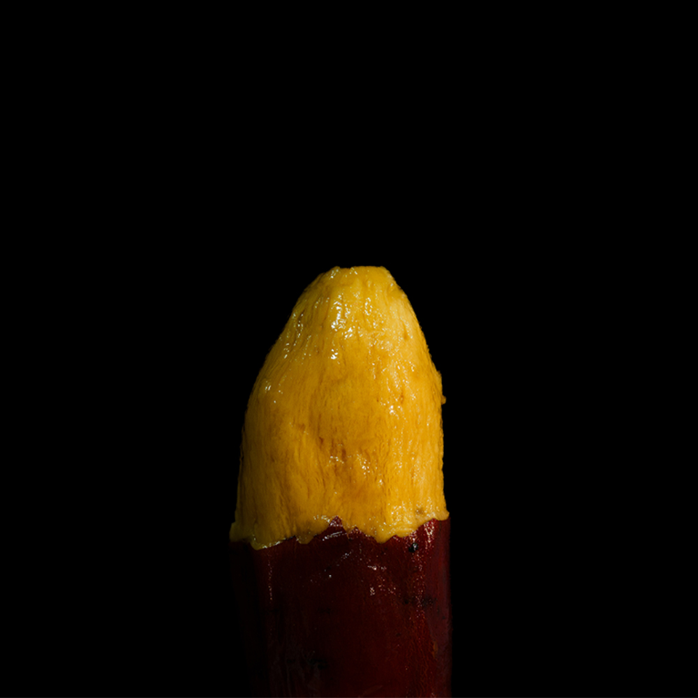
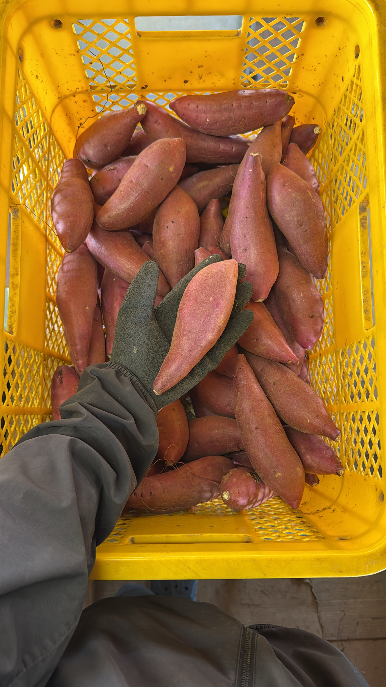
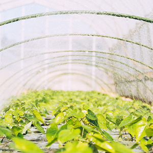

FARM YASHIRO
について
千葉県香取市で80年続く、さつまいも認定農家。土と芋に真摯に向き合い続けています。
数々の品評会で、高く評価されました。
産地や品種を伏せたブラインド審査でも、その味わいが認められています。

さつまいも博 さつまいもサミット
ファーマーズ・オブ・ザ・イヤー 受賞

第2回焼き芋選手権
最高金賞（シルクスイート）
第2回焼き芋選手権
銅賞（べにはるか）
野菜ソムリエサミット
銀賞（べにはるか）

土づくりから、貯蔵まで。
芋本来の甘みを引き出す。
FARM YASHIRO は、さつまいもの名産地・千葉県香取市で80年続くさつまいも認定農家です。現在は主に「べにはるか」と「シルクスイート」の2品種を栽培しています。
農薬は必要最低限にとどめ、化学肥料だけに頼らず有機肥料も使用。さつまいも本来の甘みや風味を最大限に引き出すために、土壌にあった独自の肥料配合で、土づくりから徹底してこだわっています。独自の肥料設計でさつまいもの特徴を最大限引き出す栽培をしています。また、さつまいもの熟成に大きく関係する貯蔵は、さつまいも専用貯蔵庫で温度・湿度を24時間計測し管理しています。
通常は廃棄になってしまう規格外品も「訳あり価格」で販売することで、フードロスの削減にも10年以上前から取り組んでいます。土と芋に真摯に向き合い続けてきた私たちのさつまいもを、ぜひ一度ご賞味ください。
さつまいも博 ファーマーズ・オブ・ザ・イヤーの授賞式では、べにはるか生みの親でもある山川先生より、独自の肥料設計による栽培や収量などを講評いただきました。

シルクスイート
皮が薄く、羊羹のようになめらかで上品な口当たり。しっとりとした食感が特長です。

べにはるか
口に残りにくい皮で、蜜の糖度は最高80度に達する、ねっとり濃厚な味わい。
その味わいは多くの焼き芋専門店でもご好評をいただいており、営業活動なしで全国100軒以上の焼き芋屋で使われています。





お得な【農家直送】をご希望の方へ
メール・SNSからのご連絡で、お振込による直接取引が可能です。ご相談だけでも大歓迎。送料込みの価格をすぐにご返信いたします。
20kg以上の大量注文OK！
2L・丸Lなど、通常ラインナップにないサイズも対応可能！
中間手数料ゼロ！農家直売だから“どこよりも安く”ご購入いただけます！
さつまいも農園 FARM YASHIRO
さつまいもの名産地・千葉県香取市に農園を構えています。
営業日：不定休
営業時間：8:00〜17:00
千葉県香取市岩部1930−１
※ 時期やタイミングによっては、さつまいもの在庫がない場合がございます。